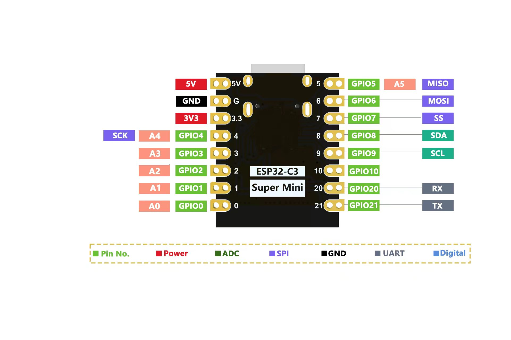

Product Overview
ESP32-C3 Super Mini is a compact IoT development board built around the ESP32-C3 platform. The ESP32-C3 family combines 2.4 GHz Wi-Fi, Bluetooth Low Energy, a 32-bit RISC-V CPU, and native USB support in a small footprint, which makes it a strong fit for beginner learning kits, smart home projects, displays, wireless sensors, and embedded prototyping.
Technical Specifications
| Item | Specification | Beginner explanation |
|---|---|---|
| Chip family | ESP32-C3 | Main MCU platform used by the board |
| CPU | 32-bit RISC-V, up to 160 MHz | Fast enough for sensors, LEDs, small displays, and wireless projects |
| Wireless | 2.4 GHz Wi-Fi + Bluetooth LE 5 | Can connect to routers, phones, BLE sensors, and smart devices |
| USB | Native USB CDC | No separate USB-UART bridge chip is needed for basic use |
| Logic voltage | 3.3V | GPIO and peripherals should follow 3.3V logic rules |
| Input voltage | 5V from USB | The USB port powers the board, then onboard regulation converts it to 3.3V |
| Onboard LED | WS2812 RGB LED on GPIO8 | You can test code and animations without adding external LEDs |
| Common interfaces | I2C, SPI, UART, PWM, ADC | Supports sensors, displays, serial devices, and analog input use cases |
| Flash | Firmware-dependent in your uploaded packages | Keep firmware package and flash settings matched |
2mflash and an AT flashing configuration that uses auto-detect flash settings. Use the correct flashing package and matching addresses for the firmware you want to install.
Board Layout & Main Modules
This board is simple, compact, and organized for quick prototyping.
Power + flashing + serial output
Used when entering download mode
Restarts the board
Runs your firmware and application
Connected to GPIO8
Converts USB 5V down to 3.3V
Circuit Overview
The internal signal path is easier to understand if you think of it as a simple chain:
USB Type-C (5V power + USB data)
↓
Voltage regulator (LDO)
↓
3.3V power rail
↓
ESP32-C3 microcontroller
↓
GPIO pins → LEDs, sensors, displays, communication devices
The USB cable brings 5V into the board. The voltage regulator turns that into 3.3V for the ESP32-C3 and its logic-level peripherals.
GPIO pins are the connection points to external devices. On this board, GPIO8 is also wired to the onboard RGB LED.
Pin Definition

Use the table below when wiring beginner projects such as OLED displays, temperature sensors, RGB LEDs, or serial modules.
| GPIO | Suggested role | Note |
|---|---|---|
| GPIO0 | Digital I/O / boot related | Use carefully because boot behavior can depend on startup state |
| GPIO1 | Digital / ADC capable | Useful for simple analog or digital sensor input |
| GPIO2 | Digital / ADC capable | Useful for basic sensor experiments |
| GPIO3 | Digital / ADC capable | Useful for digital input or analog reading tasks |
| GPIO4 | SPI SCK | Clock line for SPI peripherals |
| GPIO5 | SPI MISO | Peripheral-to-MCU data line |
| GPIO6 | SPI MOSI | MCU-to-peripheral data line |
| GPIO7 | SPI CS / digital | Chip select or general digital I/O |
| GPIO8 | RGB LED / I2C SDA | Confirmed by your MicroPython example |
| GPIO9 | I2C SCL | I2C clock line |
| GPIO10 | Digital I/O | General-purpose pin |
| GPIO20 | UART RX | Serial receive pin |
| GPIO21 | UART TX | Serial transmit pin |
USB & Serial
This board uses the ESP32-C3 built-in USB function for programming and serial communication.
USB Type-C
Native USB CDC
115200 baud
Quick Start for Complete Beginners
Follow these steps if this is your first time using the board.
Make sure the cable supports both charging and data. If your board powers up but does not appear on the computer, the cable is often the reason.
Plug the board into your computer and wait a few seconds for the operating system to detect it.
Windows: open Device Manager → Ports (COM & LPT).
macOS: open Terminal and run ls /dev/cu.*.
Linux: open Terminal and run ls /dev/tty*.
You can start in one of three common ways:
- Flash a ready-made
.binfile - Use Arduino IDE for graphical sketch-based programming
- Use MicroPython for Python-style scripting
Flash Firmware (.bin)
This is the easiest option if you want the board to run an existing firmware file without writing code.
What you need
- The board
- A USB Type-C data cable
- A
.binfirmware file - Python installed on the computer
esptoolinstalled
Step-by-step flashing guide
If Python is not installed, install it first. On Windows, check the option that adds Python to PATH.
pip install esptool
Windows: note the COM number, for example COM5.
macOS/Linux: note the device path, for example /dev/cu.usbmodemXXXX.
If flashing fails, hold the BOOT button, plug in the USB cable, wait a few seconds, then release the button.
Replace firmware.bin with your actual file name.
esptool.py --chip esp32c3 --baud 460800 write_flash 0x0 firmware.bin
.bin file before moving on to multi-file firmware packages.Flash Layout & Recommended Parameters
The uploaded flashing configuration suggests these common settings:
Common address map
| Address | Content | Purpose |
|---|---|---|
| 0x0000 | Bootloader | Starts the chip and prepares the application |
| 0x8000 | Partition Table | Defines where different data sections are stored |
| 0xD000 | OTA Data | Stores OTA boot metadata |
| 0xF000 | PHY Init | Wireless radio initialization data |
| 0x60000 | Application | Main firmware area |
Example multi-file flashing command
esptool.py --chip esp32c3 --baud 460800 --before default_reset --after hard_reset write_flash 0x0 bootloader.bin 0x8000 partition-table.bin 0xD000 ota_data_initial.bin 0xF000 phy_multiple_init_data.bin 0x60000 esp-at.bin
Arduino Setup Guide
Arduino IDE is a comfortable entry point for beginners because the menus are visual and the example flow is straightforward.
Detailed setup steps
Install Arduino IDE from the official Arduino website.
Open File → Preferences.
Find Additional Boards Manager URLs and paste this address:
https://raw.githubusercontent.com/espressif/arduino-esp32/gh-pages/package_esp32_index.json
Go to Tools → Board → Boards Manager, search for ESP32, then click Install.
Go to Tools → Board → ESP32 Arduino → ESP32C3 Dev Module.
Go to Tools → Port and choose the board's COM port.
Go to Sketch → Include Library → Manage Libraries, search for Adafruit NeoPixel, and install it.
#include <Adafruit_NeoPixel.h>
#define PIN 8
#define NUMPIXELS 1
Adafruit_NeoPixel pixels(NUMPIXELS, PIN);
void setup() {
pixels.begin();
}
void loop() {
pixels.setPixelColor(0, pixels.Color(255, 0, 0));
pixels.show();
delay(500);
pixels.setPixelColor(0, pixels.Color(0, 0, 0));
pixels.show();
delay(500);
}
Click the Upload button. If the upload fails, hold the BOOT button while the board connects.
MicroPython Guide
MicroPython is a strong beginner option because it uses Python-like syntax and lets you test ideas quickly.
Use the flashing method from the previous section, but choose the MicroPython firmware file.
Thonny is a beginner-friendly choice because it includes an editor and can talk to the board over the serial port.
In Thonny, open Tools → Options → Interpreter. Choose MicroPython (ESP32) and select the board port.
from machine import Pin import neopixel np = neopixel.NeoPixel(Pin(8), 1) np[0] = (255, 0, 0) np.write()
This turns the onboard WS2812 LED red. Your uploaded example also confirms that GPIO8 is used for the RGB LED object.
ESP-IDF Guide
ESP-IDF is Espressif's official development framework. It offers deeper control and is the right next step once you understand ports, flashing, and basic examples.
idf.py set-target esp32c3 idf.py build idf.py flash idf.py monitor
I2C / SPI / UART Guide
SDA → GPIO8
SCL → GPIO9
SCK → GPIO4
MISO → GPIO5
MOSI → GPIO6
CS → GPIO7
RX → GPIO20
TX → GPIO21
Function Summary
- Connect to Wi-Fi networks
- Communicate with BLE devices
- Control RGB LEDs and other digital outputs
- Read digital and analog sensor signals
- Drive I2C and SPI peripherals such as displays and sensors
- Exchange data over UART serial links
- Wi-Fi weather station
- OLED information display
- BLE sensor node
- RGB status indicator
- Temperature logger
- Simple home automation controller
Troubleshooting
No COM port appears
- Replace the USB cable with a known data cable
- Try a different USB port
- Reconnect the board and wait a few seconds
Upload failed
- Hold the BOOT button while connecting USB
- Close any serial monitor that is already using the port
- Double-check that the selected port is correct
The LED does not light up
- Use GPIO8 for the onboard LED
- Remember that it is a WS2812 programmable RGB LED, not a normal fixed-color LED
- Use a NeoPixel-compatible library or driver
No serial output
- Set the serial monitor to 115200 baud
- Reset the board
- Confirm that your code or firmware actually prints to the serial port